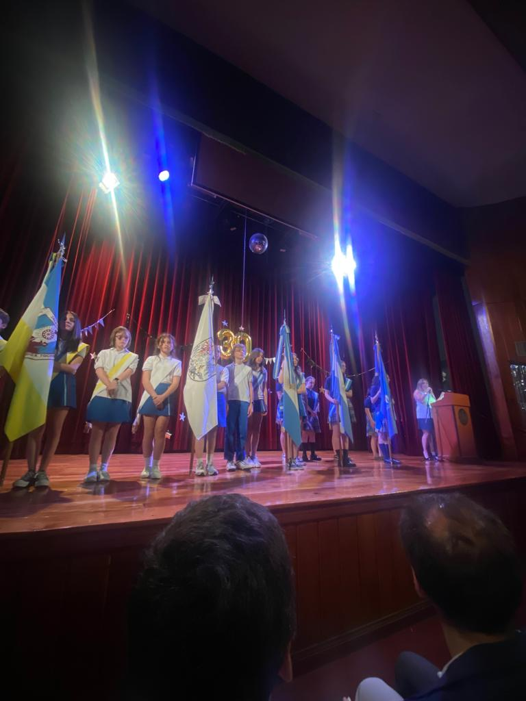

El proyecto de integración PostPrimario cumplió 30 años
Entrevistamos a María Victoria Estraviz para que nos cuente de qué se trata el proyecto
Por Solange Cueva y Analía Leguizamón 5°B
Siendo profes de educación especial buscamos un mundo más inclusivo, más justo y amable para todos, donde todos tengamos oportunidades de educarnos, de trabajar, donde todos tengamos la oportunidad de pertenecer, independientemente de lograrlo.
Hoy se cumplen 30 años del Proyecto Integración. Los alumnos de educación especial del Espíritu Santo y Tognoni organizaron una juntada, en esta fueron partícipes ambas escuelas, alumnos y familiares. Hicieron una muestra de cómo es trabajar en comunidad a lo largo del año.
La profe nos cuenta que el proyecto empieza con una mamá que tenía dos hijos, y uno de ellos tenía Síndrome de Down. La mujer estaba en la búsqueda constante de donde poder inscribir siendo denegada la inscripción, ya que solo chicos convencionales pueden ser inscriptos.
Es en este momento cuando la directora se plantea junto con la psicopedagoga que no puede volver a suceder una situación así, chicos no escolarizados a causa de un síndrome al cual no se le da la importancia e interés que se merece.
Creándose así la idea del proyecto, con el proceso de integración que todos conocen, un proceso de integración dónde el alumno puede pertenecer a un grupo dentro del aula, acompañado por sus pares junto a una maestra integradora.
Pasado el tiempo vieron que el método convencional no era muy bueno y decidieron separarlos en aulas paralelas. Teniendo los chicos, sus docentes de integración especial, especializadas en discapacidad intelectual, dándoles de igual forma las materias convencionales, integrándose con el grado convencional adecuado.
Este proyecto es muy importante, ya que, hace 30 años ningún colegio incluía a chicos con discapacidad. Hoy en día gracias a que la sociedad va cambiando, esto ya no se trata desde la pena o lástima, por tener incapacidad intelectual, sino que todos somos personas y tenemos los mismos derechos, pero exigiendo a cada uno según su capacidad, no de la misma manera que una persona sin discapacidad, pero ambos con los mismos derechos y obligaciones. Evolucionando desde un perfil existencialista a uno más inclusivo, donde todos forman parte, cada uno con sus potencialidades.
“Quisiera agradecer a la comunidad del Espíritu Santo, ya que el proyecto no depende de esta institución y sin embargo, todos los que pertenecemos nos sentimos muy cómodos de estar acá. Nuestros chicos y nosotras como profesoras, porque creemos que el Espíritu Santo es una escuela diversa, que acepta a todos por igual. Agradecer enormemente la oportunidad y especialmente a los chicos que incluyen con los nuestros que le dan un lugar.
Palabras de María Victoria Estraviz.
